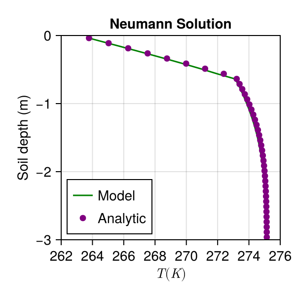

The Stefan problem
Before reading this tutorial, we recommend that you look over the coupled energy and water tutorial. That tutorial showed how to solve the heat equation for soil volumetric internal energy ρe_int, simultaneously with Richards equation for volumetric liquid water fraction ϑ_l, assuming zero volumetric ice fraction θ_i for all time, everywhere in the domain. In this example, we add in a source term to the right hand side for both θ_i and ϑ_l which models freezing and thawing and conserves water mass during the process.
To facilitate comparison to an analytically tractable problem (the Stefan problem), we set K_sat of the soil to zero. Then the simplified equations we solve are
$\frac{∂ ρe_{int}}{∂ t} = ∇ ⋅ κ(θ_l, θ_i; ν, ...) ∇T$
$\frac{ ∂ ϑ_l}{∂ t} = -\frac{F_T}{ρ_l}$
$\frac{ ∂ θ_i}{∂ t} = \frac{F_T}{ρ_i}$
Here
$t$ is the time (s),
$z$ is the location in the vertical (m),
$ρe_{int}$ is the volumetric internal energy of the soil (J/m^3),
$T$ is the temperature of the soil (K),
$κ$ is the thermal conductivity (W/m/K),
$ϑ_l$ is the augmented volumetric liquid water fraction,
$θ_i$ is the volumetric ice fraction,
$ν, ...$ denotes parameters relating to soil type, such as porosity, and
$F_T$ is the freeze-thaw term.
Import necessary modules
import SciMLBase
import ClimaTimeSteppers as CTS
using DelimitedFiles
using CairoMakie
using ClimaCore
import ClimaParams as CP
using ClimaLand
using ClimaLand.Domains: Column
using ClimaLand.Soil
import ClimaLand
import ClimaLand.Parameters as LPPreliminary set-up
Choose a floating point precision, and get the parameter set, which holds constants used across CliMA models:
FT = Float32Float32Set the values of other parameters required by the model:
ν = FT(0.535)
K_sat = FT(0) # m/s; analytic solution only exists when water cannot flow
S_s = FT(1e-3) #inverse meters
vg_n = FT(1.48)
vg_α = FT(1.11) # inverse meters
hydrology_cm = vanGenuchten{FT}(; α = vg_α, n = vg_n);
θ_r = FT(0.05)
ν_ss_om = FT(0.2)
ν_ss_quartz = FT(0.2)
ν_ss_gravel = FT(0.0)
params = Soil.EnergyHydrologyParameters(
FT;
ν,
ν_ss_om,
ν_ss_quartz,
ν_ss_gravel,
hydrology_cm,
K_sat,
S_s,
θ_r,
);Choose the domain and discretization:
zmax = FT(0)
zmin = FT(-3)
nelems = 40
soil_domain = Column(; zlim = (zmin, zmax), nelements = nelems);Set the boundary conditions:
zero_water_flux_bc = WaterFluxBC((p, t) -> 0.0)
zero_heat_flux_bc = HeatFluxBC((p, t) -> 0.0)
top_heat_state_bc = TemperatureStateBC((p, t) -> 263.15)
bottom_heat_flux_bc = zero_heat_flux_bc
boundary_fluxes = (;
top = WaterHeatBC(; water = zero_water_flux_bc, heat = top_heat_state_bc),
bottom = WaterHeatBC(;
water = zero_water_flux_bc,
heat = bottom_heat_flux_bc,
),
);Sources are added as elements of a list of sources. Here we just add freezing and thawing.
sources = (PhaseChange{FT}(),);Now we can package this up in the EnergyHydrology model struct:
soil = Soil.EnergyHydrology{FT}(;
parameters = params,
domain = soil_domain,
boundary_conditions = boundary_fluxes,
sources = sources,
);Running a simulation
Once we have the model, we can initialize the state vectors and obtain the coordinates
Y, p, coords = initialize(soil);After which, we can specify the initial condition function, and initialze the variables. We chose these to match the initial conditions of the Stefan problem:
function init_soil!(Ysoil, z, params)
ν = params.ν
FT = eltype(Ysoil.soil.ϑ_l)
Ysoil.soil.ϑ_l .= FT(0.33)
Ysoil.soil.θ_i .= FT(0.0)
T = FT(275.15)
ρc_s = Soil.volumetric_heat_capacity(
FT(0.33),
FT(0.0),
params.ρc_ds,
params.earth_param_set,
)
Ysoil.soil.ρe_int .=
Soil.volumetric_internal_energy.(
FT(0.0),
ρc_s,
T,
params.earth_param_set,
)
end
init_soil!(Y, coords.subsurface.z, soil.parameters);We choose the initial and final simulation times:
t0 = Float64(0)
tf = Float64(60 * 60 * 24 * 20);We set the cache values corresponding to the initial conditions of the state Y:
set_initial_cache! = make_set_initial_cache(soil);
set_initial_cache!(p, Y, t0);Create the tendency function, and choose a timestep, and timestepper:
exp_tendency! = make_exp_tendency(soil)
imp_tendency! = make_imp_tendency(soil);
jacobian! = ClimaLand.make_jacobian(soil);
jac_kwargs = (; jac_prototype = ImplicitEquationJacobian(Y), Wfact = jacobian!);
dt = Float64(100)
timestepper = CTS.ARS111();
ode_algo = CTS.IMEXAlgorithm(
timestepper,
CTS.NewtonsMethod(
max_iters = 3,
update_j = CTS.UpdateEvery(CTS.NewTimeStep),
),
);Problem definition and callbacks
prob = SciMLBase.ODEProblem(
CTS.ClimaODEFunction(
T_exp! = exp_tendency!,
T_imp! = SciMLBase.ODEFunction(imp_tendency!; jac_kwargs...),
dss! = ClimaLand.dss!,
),
Y,
(t0, tf),
p,
);
saveat = Array(t0:3600.0:tf)
sv = (;
t = Array{Float64}(undef, length(saveat)),
saveval = Array{NamedTuple}(undef, length(saveat)),
)
saving_cb = ClimaLand.NonInterpSavingCallback(sv, saveat);Now we can solve the problem.
sol = SciMLBase.solve(
prob,
ode_algo;
dt = dt,
saveat = 0:3600:tf,
callback = saving_cb,
);
sol_T = parent(sv.saveval[end].soil.T)[:]
fig = Figure(size = (300, 300))
ax1 = Axis(
fig[1, 1],
title = "Neumann Solution",
xlabel = L"T (K)",
ylabel = "Soil depth (m)",
)
limits!(ax1, 262, 276, -3, 0.0)
z = parent(coords.subsurface.z)[:];
lines!(ax1, sol_T, z, label = "Model", color = :green)MakieCore.Lines{Tuple{Vector{GeometryBasics.Point{2, Float32}}}}Analytic Solution of Neumann
All details here are taken from DallAmico2011 (see also CarslawJaeger), and the reader is referred to that for further information on the solution. It takes the form of a function for T(z) on each side of the freezing front interface, which depends on the thermal properties in that region, and which is also parameterized by a parameter (ζ), which we show how to solve for below. In computing the thermal properties, we evaluate the conductivity and heat capacity assuming that all of the water is either in liquid or frozen form, with total mass proportional to $θ_{l,0}ρ_l$ (as we have no water flow).
Compute the thermal conductivity and heat capacity in the frozen region - subscript 1.
θ_0 = FT(0.33)
LH_f0 = FT(3.33e5)
ρ_liq = FT(1000)
ρ_ice = FT(917)
kdry = params.κ_dry
ksat = ClimaLand.Soil.κ_sat(
FT(0.0),
θ_0 * ρ_liq / ρ_ice,
params.κ_sat_unfrozen,
params.κ_sat_frozen,
)
Ke = ClimaLand.Soil.kersten_number(
θ_0 * ρ_liq / ρ_ice,
ClimaLand.Soil.relative_saturation(FT(0), θ_0 * ρ_liq / ρ_ice, ν),
params.α,
params.β,
ν_ss_om,
ν_ss_quartz,
ν_ss_gravel,
)
λ1 = ClimaLand.Soil.thermal_conductivity(kdry, Ke, ksat)
c1 = ClimaLand.Soil.volumetric_heat_capacity(
FT(0.0),
θ_0 * ρ_liq / ρ_ice,
params.ρc_ds,
params.earth_param_set,
)
d1 = λ1 / c1;Compute the thermal conductivity and heat capacity in the region with liquid water - subscript 2.
ksat = ClimaLand.Soil.κ_sat(
θ_0 * ρ_liq / ρ_ice,
FT(0.0),
params.κ_sat_unfrozen,
params.κ_sat_frozen,
)
Ke = ClimaLand.Soil.kersten_number(
θ_0 * ρ_liq / ρ_ice,
ClimaLand.Soil.relative_saturation(θ_0 * ρ_liq / ρ_ice, FT(0), ν),
params.α,
params.β,
ν_ss_om,
ν_ss_quartz,
ν_ss_gravel,
)
λ2 = ClimaLand.Soil.thermal_conductivity(kdry, Ke, ksat)
c2 = ClimaLand.Soil.volumetric_heat_capacity(
θ_0 * ρ_liq / ρ_ice,
FT(0.0),
params.ρc_ds,
params.earth_param_set,
)
d2 = λ2 / c2;Initial T and surface T, in Celsius
Ti = FT(2)
Ts = FT(-10.0);The solution requires the root of the implicit equation below
using Roots
using SpecialFunctions
function implicit(ζ)
term1 = exp(-ζ^2) / ζ / erf(ζ)
term2 =
-λ2 * sqrt(d1) * (Ti - 0) /
(λ1 * sqrt(d2) * (0 - Ts) * ζ * erfc(ζ * sqrt(d1 / d2))) *
exp(-d1 / d2 * ζ^2)
term3 = -LH_f0 * ρ_liq * θ_0 * sqrt(π) / c1 / (0 - Ts)
return (term1 + term2 + term3)
end
ζ = find_zero(implicit, (0.25, 0.27), Bisection())
depth = abs.(reverse(z))
t = sol.t[end]
zf = 2.0 * ζ * sqrt(d1 * t)
analytic_unfrozen_profile(depth, zf) =
erfc(depth / (zf / ζ / (d1 / d2)^0.5)) / erfc(ζ * (d1 / d2)^0.5)
analytic_frozen_profile(depth, zf) = (erf(depth / (zf / ζ))) / erf(ζ)
mask_unfrozen = depth .>= zf
mask_frozen = depth .<= zf
T_frozen = Ts .+ (0.0 - Ts) .* analytic_frozen_profile.(depth, zf) .+ 273.15
T_unfrozen = Ti .- (Ti - 0.0) .* analytic_unfrozen_profile.(depth, zf) .+ 273.15
scatter!(
ax1,
T_frozen[mask_frozen],
-1 .* depth[mask_frozen],
label = "Analytic",
color = "purple",
)
scatter!(
ax1,
T_unfrozen[mask_unfrozen],
-1 .* depth[mask_unfrozen],
color = "purple",
)
axislegend(ax1, position = :lb)
save("phase_change_analytic.png", fig);
References
- M. Dall’Amico et al.: The Cryosphere, 5, 469–484 (2011).
- Carslaw, H. and Jaeger, J.: Conduction of heat in solids, Clarendon Press Oxford, 1959.
- Bonan, G.: Climate Change and Terrestrial Ecosystem Modeling, Cambridge University Press 2019
This page was generated using Literate.jl.